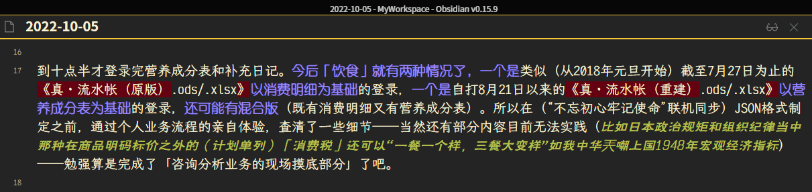
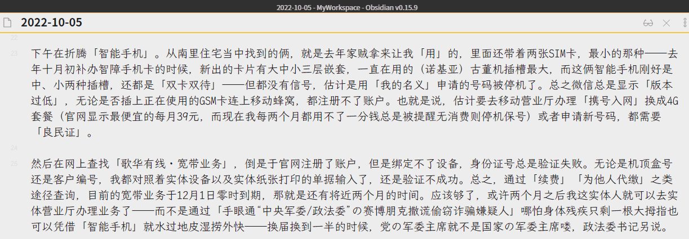
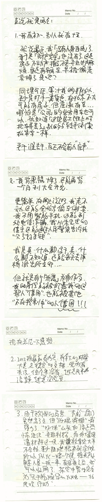

fanhan-inside2022-10-05T11:18:57Z 一句话主题： 退休政治局常务委员（在政治局讨论军国重事时）有一票，而退休的普通政治局委员则没有。 摘要： 估计北京市民间借贷规模及平账手段 铁杆庄稼地の用益权と捞外快扩大化 棍子不到，屁股不会自己从椅子上挪掉，账本当然也不会交 前情提要： 《范版东幻异闻录》暗线或曰支线：宫廷与朝廷，阴阳人两面派与飒爽美少年 今天的日记片段，作为情报兼素材： 囧斋Kargsburg起居注・日记   而前天和昨天的日记之片段，作为旁白兼大纲： 囧斋Kargsburg起居注・日记 